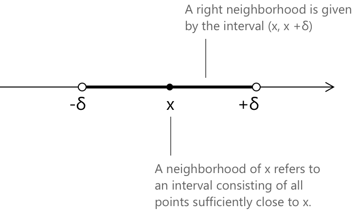
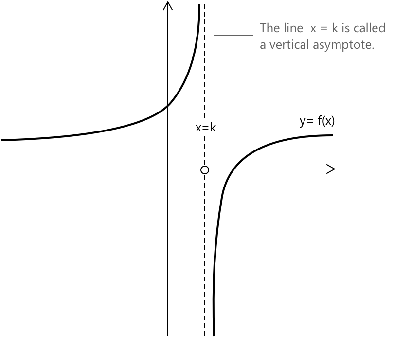
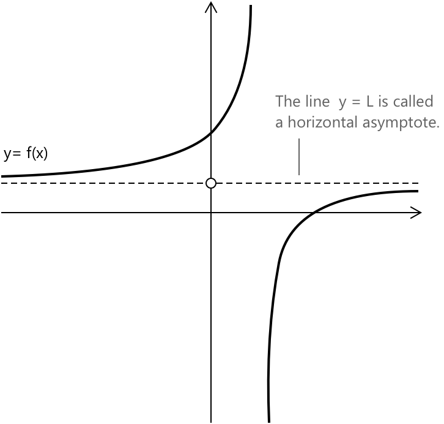

Границі
Розуміння granic у математичному аналізі
Поняття границі є фундаментальним у математиці. Інтуїтивно, границя функції \( f(x) \), коли \( x \) наближається до точки \( x_0 \), дозволяє нам аналізувати поведінку функції, коли значення \( x \) стають довільно близькими до \( x_0 \).
Окіл \( x \) — це інтервал, що складається з усіх точок, достатньо близьких до \( x \). Більш формально, окіл \( x \) — це будь-який відкритий інтервал \( (x - \delta, x + \delta) \), де \( \delta > 0 \). Це поняття є важливим для означення granic і розуміння поведінки функцій при наближенні до заданої точки.

Чим менший окіл, тим ближче точки розташовані до \( x \). Іншими словами, у міру того як інтервал \( (x – \delta, x + \delta) \) стає вужчим (коли \( \delta \) наближається до нуля), відстань між точками всередині околу та \( x \) зменшується.
Означення
Припустимо, ми маємо функцію \( f(x) \), поведінку якої ми хочемо вивчити, коли \( x \) наближається до точки \( x_0 \). Ми кажемо, що коли \( x \) прямує до \( x_0 \), функція \( f(x) \) має границю \( \ell \), і записуємо:
\[ \lim_{x \to x_0} f(x) = \ell \]
Формально це твердження стверджує, що для будь-якого значення \( \varepsilon > 0 \) існує відповідна відстань \( \delta > 0 \), така що щоразу, коли:
\[ 0 < |x - x_0| < \delta \]
звідси випливає, що:
\[ |f(x) – \ell| < \varepsilon \]
Іншими словами, для кожного околу \( \ell \) існує достатньо малий окіл \( x_0 \), такий що всі відповідні значення функції залишаються в цьому околі. Це формальне означення точно формулює інтуїтивне поняття про те, що границя представляє значення, до якого наближається \( f(x) \), коли \( x \) стає довільно близьким до \( x_0 \).
Коли означення границі застосовується тільки до правого або лівого околу \( x_0 \), ми називаємо їх відповідно правою та лівою граничними значеннями. Вони представляються наступним чином:
\[ \lim_{x \to x_0^+} f(x) \quad \text{та} \quad \lim_{x \to x_0^-} f(x) \]
Асимптоти та нескінченні границі
Загалом, значення \( x \) у границі може наближатися до дійсного числа \( x_0 \) або до \( \pm \infty \).
\[ \lim_{x \to x_0} f(x) = \ell \quad \text{або} \quad \lim_{x \to x_0} f(x) = \pm \infty \]
Крім того, саме значення границі може бути або скінченним числом, або \( \pm \infty \).
\[ \lim_{x \to \pm \infty} f(x) = \ell \quad \text{або} \quad \lim_{x \to \pm \infty} f(x) = \pm \infty \]
Коли границя \( f(x) \) існує і прямує до \(\pm \infty\), коли \( x \) наближається до скінченного дійсного числа, поведінка функції може бути схожа на спрощену схему, показану на малюнку. Пряма \( x = k \) називається вертикальною асимптотою:

У прикладі ми маємо випадок, коли права та ліва границі \( f(x) \) дорівнюють відповідно:
\[ \lim_{x \to x_0^+} f(x) = – \infty \quad \text{та} \quad \lim_{x \to x_0^-} f(x) = + \infty \]
Коли границя \( f(x) \) існує і наближається до скінченного значення \( L \), коли \( x \) прямує до \( \pm \infty \), поведінка функції може бути схожа на спрощену схему, показану на малюнку. Пряма \( y = L \) називається горизонтальною асимптотою:

У прикладі ми маємо випадок, коли праві та ліві границі \( f(x) \) дорівнюють відповідно:
\[ \lim_{x \to +\infty} f(x) = L \quad \text{та} \quad \lim_{x \to -\infty} f(x) = L \]
Асимптота визначається як пряма, до якої графік функції наближається довільно близько, коли значення \( x \) або \( y \) зростає чи зменшується без обмеження. Отже, відстань між кривою та асимптотою наближається до нуля, коли графік поширюється до країв координатної площини.
Умови існування границі та неперервності
Коли ліва та права границі функції існують і є скінченними, але мають різні значення при \( \ell_1 \neq \ell_2 \), ми маємо:
\[ \begin{cases} \lim\limits_{x \to x_0^-} f(x) = \ell_1 \in \mathbb{R} \\[0.5em] \lim\limits_{x \to x_0^+} f(x) = \ell_2 \in \mathbb{R} \end{cases} \implies \nexists \lim\limits_{x \to x_0} f(x) \]
У цьому сценарії границя \( f(x) \), коли \( x \) наближається до \( x_0 \), не існує, оскільки функція наближається до двох різних значень залежно від напрямку наближення. Проте ліва границя та права границя є добре визначеними та скінченними, якщо розглядати їх окремо.
Згідно з теоремою про єдиність границь, якщо границя функції \( f(x) \), коли \( x \) наближається до \( x_0 \), існує (будь то скінченна чи нескінченна), така границя є єдиною. Це твердження можна формально представити як:
\[ \lim_{x \to x_0} f(x) = \ell \in \overline{\mathbb{R}} \implies \ell \text{ є єдиною} \]
Теорема гарантує, що якщо границя існує, не може бути двох різних значень, що задовольняють означення границі для однієї і тієї ж функції та точки.
Поняття границі є фундаментальним для введення та визначення поняття неперервної функції. Функція \( y = f(x) \) називається неперервною в точці \( x_0 \), якщо границя функції, коли \( x \) наближається до \( x_0 \), існує і дорівнює значенню функції в цій точці. Формально це виражається так:
\[ \lim_{x \to x_0} f(x) = f(x_0) \]
Властивості
Наступні властивості границь є особливо корисними для виконання обчислень та спрощення складних виразів. Вони встановлюють базові правила маніпуляцій з границями та є важливими для розв'язання складніших математичних задач.
Границя добутку сталої та функції дорівнює добутку сталої та границі функції, за умови, що границя існує.
\[ \lim_{x \to x_0} \left( c \, f(x) \right) = c \, \lim_{x \to x_0} f(x) = c \cdot \ell \]
Множення функції на сталу не впливає на процес знаходження границі, окрім масштабування результату на цю сталу.
Границя алгебраїчної суми двох функцій дорівнює сумі їхніх окремих границь, за умови, що обидві границі існують.
\[ \lim_{x \to x_0} \left( f(x) + g(x) \right) = \lim_{x \to x_0} f(x) + \lim_{x \to x_0} g(x) = \ell_1 + \ell_2 \]
Таким чином, границі кожної функції можна обчислити окремо, а потім додати. Це особливо корисно при роботі з поліномами, тригонометричними функціями та іншими поширеними математичними виразами.
Границя добутку двох функцій дорівнює добутку їхніх окремих границь, за умови, що обидві границі існують.
\[ \lim\limits_{x \to x_0} \left( f(x) \, g(x) \right) = \lim\limits_{x \to x_0} f(x) \cdot \lim\limits_{x \to x_0} g(x) = \ell_1 \cdot \ell_2 \]
Границя частки двох функцій дорівнює частці їхніх окремих границь, за умови, що обидві границі існують і границя знаменника не дорівнює нулю.
\[ \lim\limits_{x \to x_0} \left( \frac{f(x)}{g(x)} \right) = \frac{\lim\limits_{x \to x_0} f(x)}{\lim\limits_{x \to x_0} g(x)} = \frac{\ell_1}{\ell_2} \]
Коли стандартні властивості не застосовуються
Зазначені вище властивості є дійсними лише тоді, коли всі відповідні границі існують і є скінченними, а знаменник залишається ненульовим. Однак на практиці часто зустрічаються вирази, де пряма підстановка дає невизначений результат, такий як:
\[ \dfrac{0}{0} \quad \dfrac{\infty}{\infty} \quad \infty – \infty \]
Такі вирази класифікуються як невизначеності. Їх розв'язання потребує спеціальних методів, що виходять за межі стандартних алгебраїчних маніпуляцій з границями. Класичний приклад ілюструє цей момент:
\[ \lim_{x \to 0} \frac{\sin x}{x} \]
Пряма підстановка \( x = 0 \) дає \( \frac{0}{0} \), що є невизначеним. Властивість частки границь у цьому випадку не застосовується, оскільки границя знаменника дорівнює нулю. Розв'язання таких виразів потребує спеціального аналітичного підходу, як детально описано на відповідній сторінці.
Фундаментальні границі елементарних функцій
Наступні границі характеризують асимптотичну поведінку поширених елементарних функцій. Ці границі забезпечують базовий інструментарій для обчислення складніших granic і часто зустрічаються в математичному аналізі.
Для сталої функції \(f(x) = k\) при \(k \in \mathbb{R}\), маємо:
\[\lim_{x \to -\infty} k = k \quad \text{та} \quad \lim_{x \to +\infty} k = k\]
Для функції \( f(x) = x \), маємо:
\[\lim_{x \to -\infty} x = -\infty \quad \text{та} \quad \lim_{x \to +\infty} x = +\infty\]
Для показникової функції з основою \( a > 1 \), маємо:
\[\lim_{x \to -\infty} a^x = 0 \quad \text{та} \quad \lim_{x \to +\infty} a^x = +\infty\]
Для показникової функції з основою \( 0 < a < 1 \), маємо:
\[\lim_{x \to -\infty} a^x = +\infty \quad \text{та} \quad \lim_{x \to +\infty} a^x = 0\]
Якщо основа більша за \(1\), показникова функція необмежено зростає в одному напрямку і наближається до нуля в іншому. Якщо основа знаходиться строго між \(0\) та \(1\), ця поведінка змінюється на протилежну.
Для степеневої функції з парним показником, маємо:
\[\lim_{x \to -\infty} x^n = +\infty \quad \text{та} \quad \lim_{x \to +\infty} x^n = +\infty\]
Для степеневої функції з непарним показником, маємо:
\[\lim_{x \to -\infty} x^n = -\infty \quad \text{та} \quad \lim_{x \to +\infty} x^n = +\infty\]
Для кореневих функцій із парним індексом, маємо:
\[\lim_{x \to +\infty} \sqrt[n]{x} = +\infty\]
Для парних індексів коренева функція визначена лише для \( x \geq 0 \). Тому границя при \( x \to -\infty \) не застосовна.
Для кореневих функцій із непарним індексом, маємо:
\[\lim_{x \to +\infty} \sqrt[n]{x} = +\infty \quad \text{та} \quad \lim_{x \to -\infty} \sqrt[n]{x} = -\infty\]
Для логарифмічної функції з основою \( a > 1 \), маємо:
\[\lim_{x \to 0^+} \log_a x = -\infty \quad \text{та} \quad \lim_{x \to +\infty} \log_a x = +\infty\]
Для логарифмічної функції з основою \( 0 < a < 1 \), маємо:
\[\lim_{x \to 0^+} \log_a x = +\infty \quad \text{та} \quad \lim_{x \to +\infty} \log_a x = -\infty\]
Для функції модуля \( f(x) = |x| \), маємо:
\[\lim_{x \to -\infty} |x| = +\infty \quad \text{та} \quad \lim_{x \to +\infty} |x| = +\infty\]
Для функції знака \( \text{sgn}(x) \), маємо:
\[\lim_{x \to -\infty} \text{sgn}(x) = -1 \quad \text{та} \quad \lim_{x \to +\infty} \text{sgn}(x) = 1\]
Працюючи з границами, ви використовуєте алгебраїчні операції, щоб комбінувати, розкладати та працювати з функціями систематично. Ці правила, такі як границі сум, добутків, часток, степенів та композицій, детальніше пояснюються на сторінці про алгебру granic.
Вибрана література
-
Harvard University O. Knill. Unit 3: Limits
-
University of California, Berkeley A. Vizeff. Continuity and Discontinuities
-
University of California, Los Angeles N. Hu. Limits of Functions
-
University of California, Berkeley R. Wang. Limits
-
MIT D. Jerison. Limits and Continuity